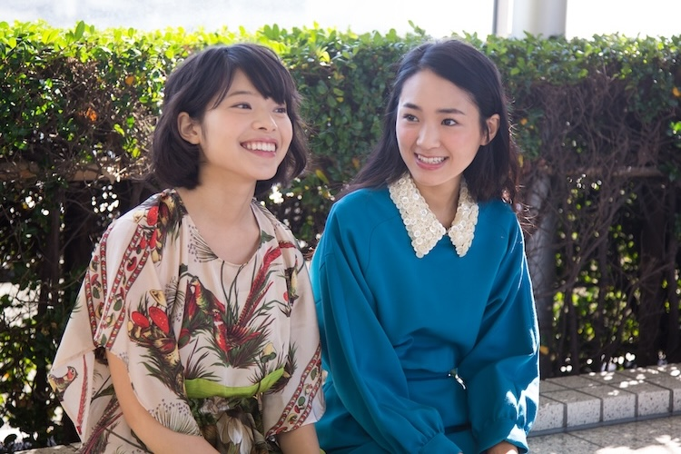
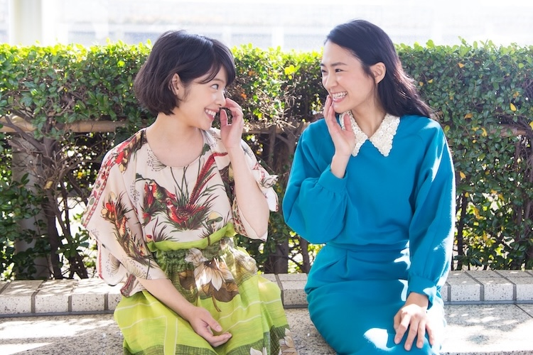
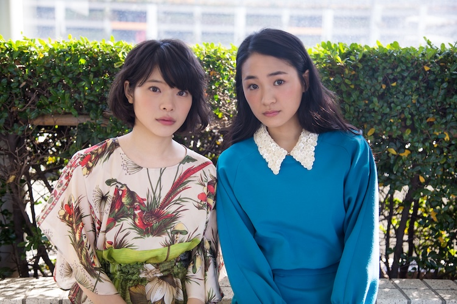

話題のCMを手掛ける映像ディレクターでありながら、主宰する「城山羊の会」の上演作『トロワグロ』にて、第59回岸田國士戯曲賞を受賞するなど、キャリアに裏打ちされた独自の才気がみなぎる山内ケンジ監督の新作『友だちのパパが好き』は、洒脱な映像感覚と生々しい演劇的アプローチが両立した怪作だ。常識を逸脱した少しズレた登場人物たちの中で、ニュートラルな存在の妙子役を抑制の効いた演技力で体現する岸井ゆきの、友人である妙子の父親（吹越満）に熱烈にアタックする猪突猛進なマヤ役を演じる安藤輪子の２人に、滑稽だけど切実な人間模様を映し出した恋愛悲喜劇について話を聞いた。
マヤに対して「共感できないけどね」って妙子の台詞があるんですけど、私も全く同じ気持ちでした。（岸井）
撮影を終えてから、２人が顔を合わせるのは先日の東京国際映画祭での上映以来だそうですが、お互いの初対面の印象はどんな感じだったんですか？
岸井：
最初の印象は、何だろ…、キリっとしていて強そうだなって…（笑）
安藤：
よく言われます（笑）、怖そうって。
岸井：
でも、喋ったら全然そんなことなくて。
安藤：
私は、まず可愛い！ って思いました。それで本読みをしたら、お芝居うまっ！ って思って。その印象が強いです。
城山羊の会の舞台にも出演している岸井さんの方が先輩になりますね。
岸井：
山内ケンジさんの作品に参加するのが私はこれで３度目になるのですが、でも先輩的な要素はそれだけで。
安藤：
いや、いや、いや（笑）、先輩です。
山内監督はCMなど映像をやられてる方ですけど、舞台演出家でもあるわけで、映画と演劇の両方の現場を経験した岸井さんは違いは感じましたか？
岸井：
映画は台本が最初の段階から出来てるってところが違いますね。舞台の時は、台本は最初の２ページくらいだけで（笑）、タイトルも仮でした。稽古をしながら台本も完成していくので、出来ている部分から詰めていく感じでしたね。
基本的に当て書きをされる方だそうですね。
岸井：
そうですね。稽古が始まらないと書けないらしく、最初の頃は時々いらっしゃって、ちょっと稽古をしてから「じゃあ、僕はホンを書くので」っていなくなる（笑）。映画では、最初から台本が書き上がっていたので、凄い！ って思いました。
安藤さんも城山羊の会の新作公演「水仙の花」に出演しますが。
安藤：
今日が稽古初日なんです。でも、台本は１５ページ出来てました。
岸井：
え、凄い！ （笑）
安藤：
（笑） でも、私もチラシの裏に書かれていたあらすじを読んで、初めてこういう感じの話なんだったって知ったんですよ。
岸井：
そう、そう、私もそんな感じでした。
稽古をしながら台本を書いていくことって演劇では珍しくないですよね？
岸井：
はい。私が今まで出演させて頂いた舞台も、稽古をしながら台本が完成していきました。

会話のやり取りだけで関係性が表現されていく本作の脚本にまず感嘆しきりで。長回しのワンシーンワンカットが多くて、それが連なって巧みに話が展開していくので、お芝居への集中の仕方は演劇に近かったんじゃないかと思いますけど、実際いかがでしたか？
岸井：
撮影に入る前に何日かリハーサルがあったので、特に大変ということはなかったです。
安藤：
台詞を間違えたり忘れたらどうしようっていう心配はあったんですけど、トチったりすることは皆そんなになかったですよね。
岸井：
山内監督の書く台詞って、当て書きということもあるかもしれないんですけど、覚えやすいし言いやすくて。ちょっと台詞を間違ったとしても軌道修正できるような台本になっている気がして、会話が止まっちゃったというようなことはなかったです。
吹越さんがすごく引っ張っていって下さって、吹越さんのアイデアで、マヤが出来ていくような感覚はありました。（安藤）
妙子役とマヤ役を演じてるわけですが、役に対しての最初の感想は？
岸井：
やられたって思いました。これは振り回されるぞって（笑）
妙子は比較的ニュートラルな役ですからね。一方のマヤは、劇中の台詞にもある通り、猪突猛進なキャラクターですが、当て書きと言われてどうですか？
安藤：
そうですね（笑）。当て書きって思うと、ちょっと複雑でした。最初２ページくらいの台本があって、それを使ってオーディションをしたんです。すごく面白かったし、自分にはない気質の役だなって挑戦的な気持ちで、やってみたいと思ったんですけど、マヤっぽいと言われると…。でも、最初は「え〜！ 似てますか？」って感じだったんですけど、実際に演じていくうちに似てる部分もあるかもなって思ったりしました。
岸井：
受ける役としては困ったぞって思いました（笑）。自分だったらと置き換えるとちょっと困惑しますから。マヤに対して「共感できないけどね」って妙子の台詞があるんですけど、私も全く同じ気持ちでした。
安藤：
相手をカッコいいと思ってしまうのは、実際に出会ってしまえばなくはないのかなって思いますけど、ただ行動に移すのは、そうですねぇ…、やっぱり駄目ですね（笑）
岸井：
友達のお父さんと知らずに知り合って、いいな、素敵だなって思って、後から同い年くらいの娘がいたということならまだ分かるんですよ。友達のお父さんと分かってて、あそこまでグイグイいけるのは、理解できないですね。
安藤：
すいません…（笑）
岸井：
（笑）
そういう役ですからね（笑）。それも吹越さんの魅力があってこそ説得力がありますよね。吹越さんとのお芝居の呼吸はいかがでしたか？
岸井：
お父さんだって思ったらすんなり入ってきました。今まで何度か共演させて頂いていて、最初はお兄ちゃんと妹という関係だったんですけど、その次は不倫関係で。やっぱりそういう要素がある方なんだなって（笑）。石橋けいさんとも２回共演していて、石橋さんは２回ともお母さん役だったので、家族感は現場ですんなり出たかなと思います。
安藤：
３人はリアルな親子に感じますよね。私は惹かれる役ですけど、吹越さんがすごく引っ張っていって下さって、「ここはこうした方がいいよ」とかアイデアを出してくださったんです。吹越さんのアイデアで、マヤが出来ていくような感覚はありました。

演者同士で事前に話し合ったりはしたんですか？
岸井：
特になかったです。山内監督自身もシーンの意図みたいなものについての説明をされなかったので、お互いの自己解釈を摺り合わせる感じでした。でもそれもあくまで台詞のニュアンスで摺り合わせるだけなので、言葉に出して確認し合うようなことはなかったです。
擦り合わせをしながら変わっていった部分はありましたか？
安藤：
本番は変わってましたよね？
岸井：
そうですね。リハでやってみたら何か違うかもって思ったシーンがいくつかあって、実際にこういう場面に遭遇したら私ならしないかもしれないって思ったところは変わっています。例えば、終盤の公園のシーンで、妙子はマヤの方へ駆け寄るって台本には書いてあったんですけど…。
あのシーンは、笑っちゃいけないトーンなはずなのに、笑っちゃいますよね。
岸井：
そうなんです。引いちゃって、マヤの方へ走っていけなかったんです。
驚きより、ちょっと呆れてる感じですよね（笑）
岸井：
どん引きでした（笑）。だから監督に、寄って行けなかったんですけど、どうしましょうみたいな相談をしたら、「それでいいです」と。あと、最後の病室のシーンで妙子はマヤの松葉杖を蹴るんですけど、あれはアドリブでやりました。ト書きには、ただ病室を出て行くって書いてあったんです。
安藤：
びっくりしました。マジで泣きそうになりました（笑）
岸井：
本当にムカついてしまって。私なら素通り出来ない！ って思って。マヤが自分で起こしたくせにと思ったら、自然とガーンって蹴ってて、そしたらOKで（笑）
安藤：
あのシーンは東京国際映画祭の上映でも笑いが起きてましたよね。
一人一人は純粋なのに、みんな変態で。それに妙子が喝を入れていく。でも、実は妙子も変態だと思うんですよね。（岸井）
どちらも不思議なリアリティがありました。全編通して、笑っていいのか分からないような絶妙な空気が貫かれていて、2人がファミレスに落ち合って話すシーンも妙なカタルシスがあります。あのシーンはカットを割っていますよね？
岸井：
いえ、あのシーンは２カメでの撮影だったので、カットをかけずに、お芝居は通してやりました。
なるほど。ということは、ほぼ全編ワンカットだったんですね。あのファミレスのシーンは劇中の２人の真剣さが可笑しみを生んでいて。食い気味の会話のテンポも独特で、素晴らしいなって。
岸井・安藤：
やった！
岸井：
嬉しいですね。
安藤：
でも結構、台詞は台本通りでしたね。
間やテンポまでは台本に書かれてるわけではないですよね。
安藤：
はい。たぶんそれが山内監督の台詞の凄さで。ト書きはなくても自然とそうなっちゃうんです。
岸井：
意外とテイクもそんなに重ねてないですね。２、３回くらいで。
安藤：
序盤のファミレスのシーンの方が何回かやり直したかもしれないです。
岸井：
うん、うん。やった気がする。あのシーン、ちょっとピリッとしてましたね。
安藤：
私がリハでうまく出来なくて、最終リハでも監督に「４５％だよ」って言われて、やばい、やばい、やばいってなって。山内監督の理想に近づけてない感じが自分の中にあったんです。でも本番でOKが出た理由も明確に分かってなかったりするんですけど（笑）
具体的な言葉での指示はないってことですよね？
安藤：
そうなんです。でもリハーサルは何回もしましたよね。
岸井：
輪子ちゃんと前原さんが山内組が初めてだということもあって、あのシーンはリハの時間をかなりとってくださったんです。山内監督は独特な癖があって、こうしたいっていう理想があると思うんですけど、その理想が演者に見えにくいんです。モヤがかかってて。とにかく「普通に言ってくれ」ということが１番大事で。演技っぽいニュアンスになるのを嫌うんだと思います。
自然体を目指すと、リハの方が良かったりしないですか？
岸井：
前のテイクの方が良かったって言われたりはあったと思います。
安藤：
さっき話したファミレスのシーンも、私が台詞を噛んでるテイクが使われてて。そっちの方が演技が自然だったからだと思うんですけど。

例えば、吹越さんと平岩紙さんのカフェでの会話をマヤが隠れて聞いてるシーンも、間に座っているカップルの出捌けの一連も含めての長回しじゃないですか。段取りも汲みつつ、感情を入れた芝居をしなきゃいけないので、自然体を目指しながら、かなりの計算も必要ですよね？
岸井：
そういうキュー出しはかなり正確でした。そういえば、ファミレスのシーンもウェイトレスが通るタイミングとか緊張感がありました。
安藤：
そうですね、そうですね。苦労なさってました。
ただ長く回してるだけじゃない周到な仕掛けが各シーンに用意されていて。マヤが先生（金子岳憲）に別れを告げようとして３人が揉めるシーンなんかも。
岸井・安藤：
（笑）
岸井：
妙子は最初は柱に隠れて聞いてますけど、あそこもタイミングのことは結構言われました。エキストラさんが横切るタイミングについてもかなり細かくおっしゃっていました。そう、そう、思い出してきた。
安藤：
いい具合に車が偶然、通り過ぎたりとかして。
岸井：
私が、変態！ とか言ってる時にちょうど車が通り過ぎて（笑）。あそこ楽しかったね。
安藤：
楽しかったですね。あと去った後の金子さんが面白くて、笑っちゃいそうで、遠目から見ないようにしてました。「嘘だい」って台詞が何回聞いても笑っちゃいそうになるんです（笑）。それと、台詞の「あ、」とか「え、」とかいう細かい言い回しの拘りに驚かされました。
「水仙の花」でも活かされそうですか？
安藤：
そう思います。
岸井さんから先輩としてのアドバイスはありますか？
岸井：
え、え、え。下北沢の某店に、「城山羊の会」用のボトルがあります（笑）
最後に映画を観て頂ける方に一言ずつ。
岸井：
みんな真っ直ぐ過ぎて、こんがらがっていくというか、一人一人は純粋なのに、みんな変態で。それに妙子が喝を入れていくので、観ている方に妙子がいて良かったなって思って欲しいです。でも、実は妙子も変態だと思うんですよね。登場人物の誰かには共感できる映画だと思うので、楽しんで頂けると思います。
安藤：
普段の生活では共感できないようなマヤの猛アタックぶりを映画で感じて頂いて楽しんで頂けたら嬉しいなって思います。是非、映画館でご覧下さい。